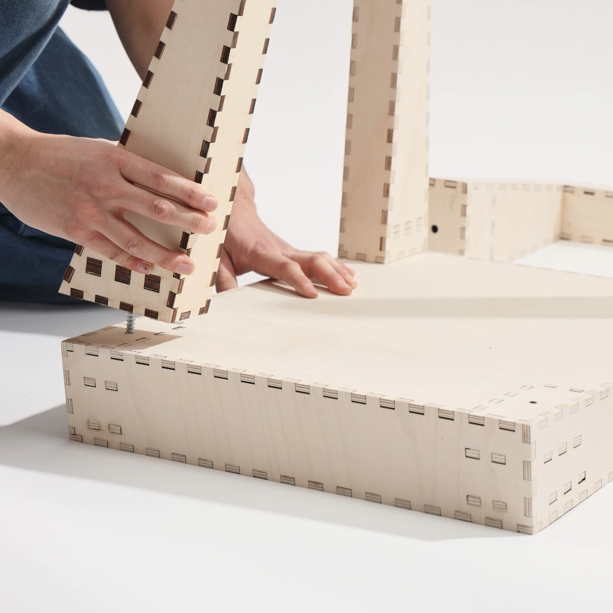
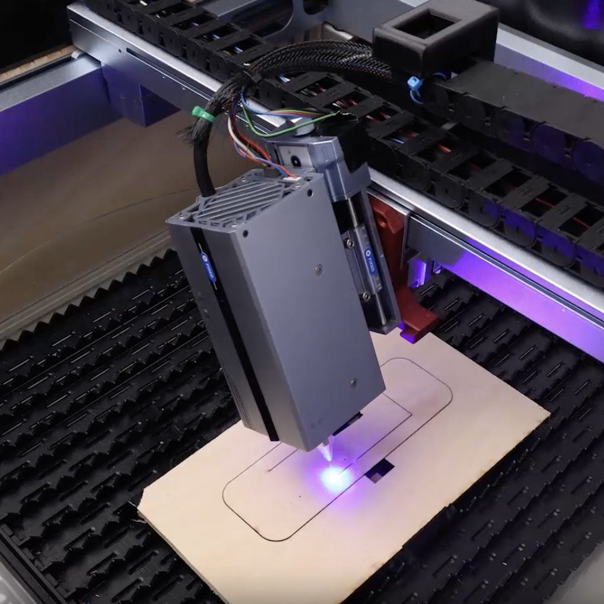
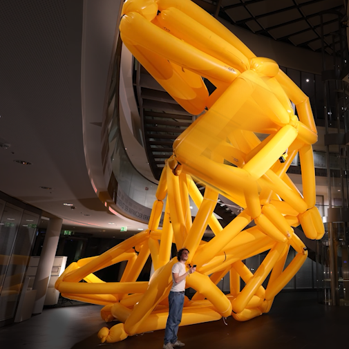
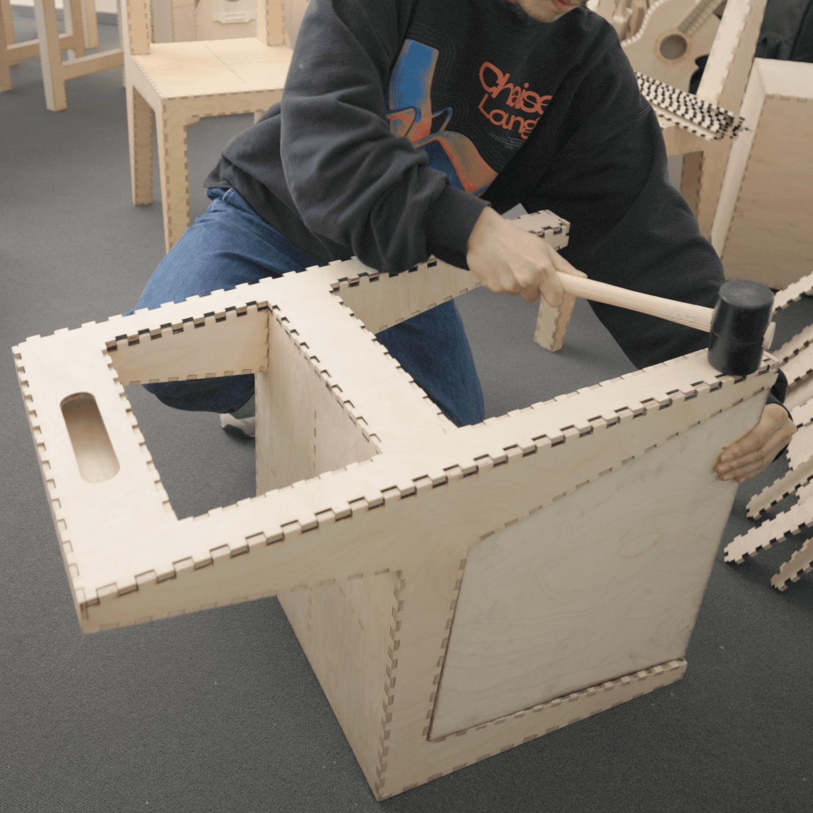
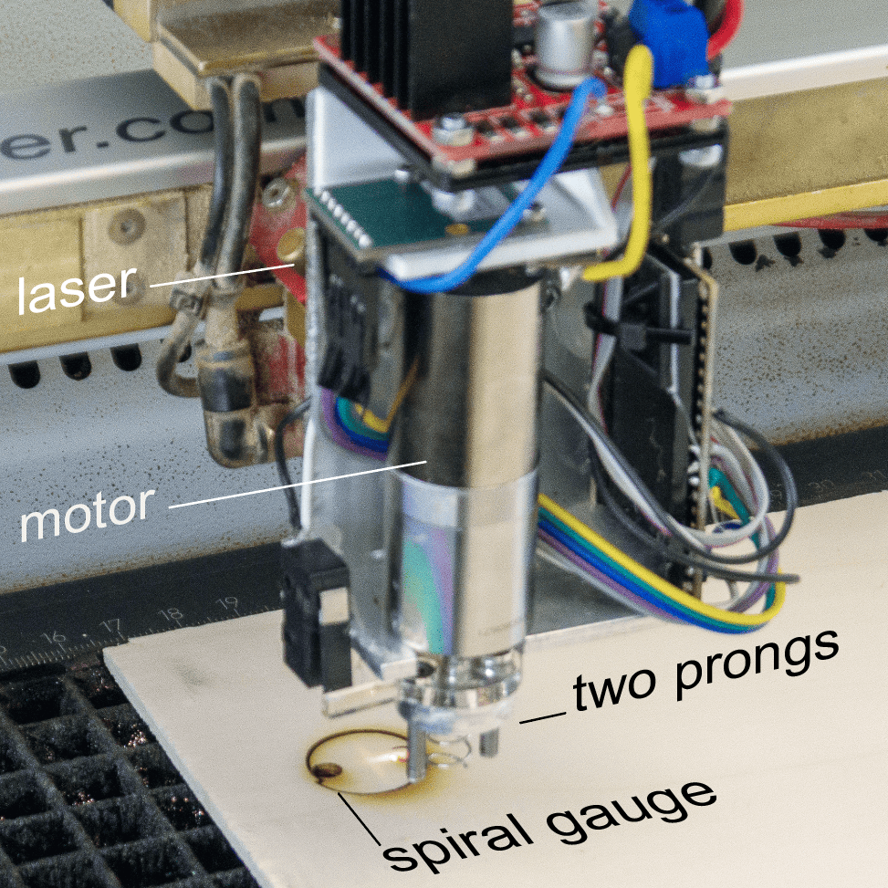
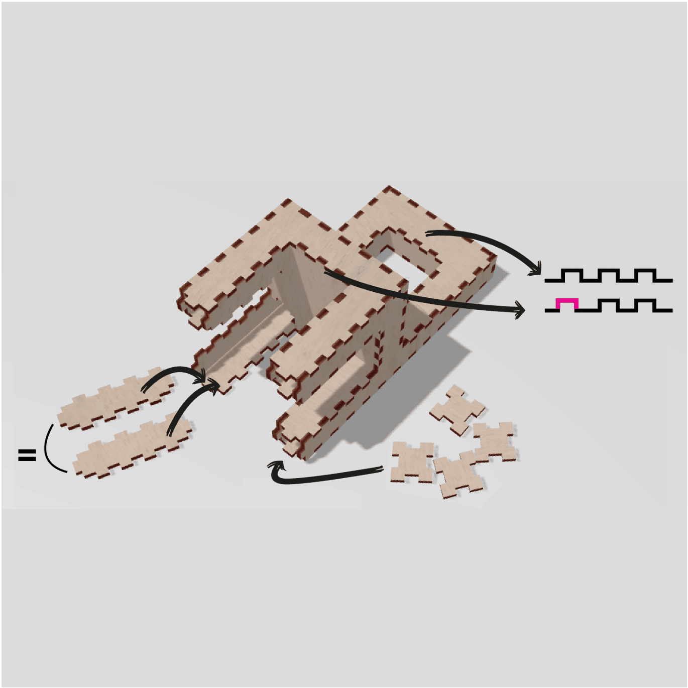
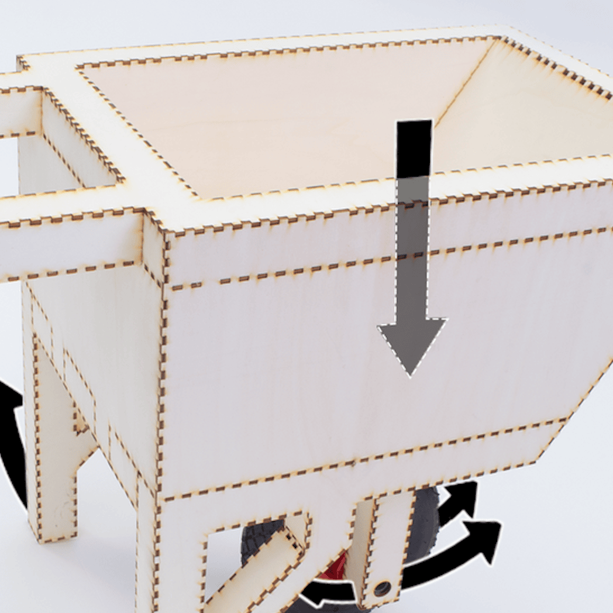

|
|
|
In my PhD work, I am enabling non-expert users to design and fabricate load-bearing objects, such as furniture. As illustrated below, I achieve this by automating structural analysis, generating jigs and computing optimized assembly paths, and by automatically calibrating laser cutters. With my last project, I push past the maker movement by decomposing laser-cut objects IKEA-style. This makes these objects efficient to ship and so easy to assemble that regular consumers can do it. 
|
|
|

[10]
PÅCKER: Making Large Laser-Cut Objects Easy to Store and Transport
Shohei Katakura, Chiao Fang, Lukas Rambold, Martin Taraz, Lino Hellige, Robert Kovacs, Muhammad Abdullah, and Patrick Baudisch.
UIST2026 (full paper)
 Paper
Paper
 Video
Video
 acm DL
acm DL
UIST2026 (full paper)
Paper
Video
acm DL

[9]
Personal 5DOF Laser Cutting: Allows Making Clean-Looking, Load-Bearing, and Cut-In-Place Objects
Antonius Naumann, Chiao Fang, Lukas Rambold,
Martin Taraz, Tom Haas, Jonas Baron, Katharina Posegga,
Edgar Bennemann, Corvin Kögler, Leonard Hinrich del Federico,
Julian Arnold, Gustav Ahlgrimm, Shohei Katakura, Muhammad Abdullah,
Robert Kovacs, and Patrick Baudisch.
UIST2026 (full paper)
Paper
Video
acm DL
UIST2026 (full paper)
Paper
Video
acm DL

[8]
AirForce: Personal Fabrication of Large-Scale, Load-Bearing Animatronics Structures from a Single Tube

[7]
Mallet-Based Assembly: Enabling Load-Bearing Laser-Cut Models

[6]
Kerfmeter: Automatic Kerf Calibration for Laser Cuting
[5]
HingeCore: Laser-Cut Foamcore for Fast Assembly

[4]
FoolProofJoint: Reducing Assembly Errors of Laser Cut 3D Models by Means of Custom Joint Patterns

[3]
Trusscillator: a System for Fabricating Human-Scale Human-Powered Oscillating Devices

[2]
FastForce: Real-Time Reinforcement of Laser-Cut Structures
©shohei katakura